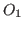
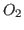

Next: About this document ...
Serge, S Petiton
Parallel algorithms for arbitrary size sparse and dense matrices with imposed spectrum
LIFL
Université de Lille 1 Sciences et Technologies
France
serge.petiton@lifl.fr
Hervé, H Galicher
Christophe, C Calvin
Since, at the present time, exascale machines are not available, it is
quite difficult to provide input data (matrices) to evaluate the
performance and the behaviour of the numerical algorithms (linear and
eigen solvers) at this target scale. But it is compulsory to prepare such
kind algorithms which could scale at this level. A solution proposed is
to provide a matrix generator which could produce arbitrary size
matrices, dense or sparse, with an imposed spectrum.
We adress the following problem :
- given a set of eigenvalues and/or singular values, can we generate
a matrix having these eigenvalues and/or singular values ?
The answer is obvious if we do not add some constraints because, for  and
and  two given eigenvalues and singular values vectors and for any
invertible matrix
two given eigenvalues and singular values vectors and for any
invertible matrix  and two orthogonal matrices
and two orthogonal matrices 
and 
, the
expected matrices are immediately accessible if we perform the inversion
of
or make the product of
with two orthogonal matrices. However
the constraints are the following :
- the matrix shall not be hermitian and shall not look like a trivial matrix,
- the algorithm must be tractable in very high dimension,
- the computer arithmetic must be controllable,
- the density and position of zeros must be controllable.
The main implications of these constraints are that we cannot accept a
generating algorithm that needs to invert a matrix and/or involving a lot
of floating point divisions, and neither we can build it from small sized
independent blocks solutions of our problem in small dimension as we want
to have a final matrix with a quite random shape.
Mathematically, building a matrix with at the same time a prescribed
spectrum and a singular spectrum exactly falls into the application of
the Horn-Weyl theorem. It leads to an algorithm that builds matrices with
a fixed general shape and is recursive. We first propose a GPU
implementation for this kind of generating algorithm. In order to
circumvent to the lack of flexibility in the type of matrices resulting
from this algorithm, we propose two new approches to generate our
matrices. One is focused on an iterative use of the Bartlett's formula,
its complexity is controllable and the density of zeros too. It is based
on the construction of a class of matrices whose inverse is easily
computable with standard matrix products.
The other method is much more abstract and is based on ODE's and
nilpotent semigroup generators. It has the advantage that, at the end,
the final algorithm is surprisingly simple with parameters easily
controllable to choose the shape of the final matrix, the most important
aspect is that this algorithm allows us to produce matrices having a
multidiagonal shape (beyond a controllable diagonal threshold, elements
in the top-right and bottom-left corners are exactly zeros). We show that
there exists a linear operator based on a Jordan representation whose
exponential is exactly computable and its associated semigroup has a
fixed spectrum. We also show that by applying this semigroup to a
well-chosen initial condition we end up with a multidiagonal matrix as
expected. The property of the algorithm depends on the nilpotency degree
of the chosen operator. At the end we observe that the algorithm can be
transformed in such a way that all the computations can be done exactly
without rounding errors because we have no more floating point division.
The matrices finally obtained will have the form :
This algorithm is implemented in parallel in order to accelerate the
generation of matrices in very large dimension.
We will present the different proposed algorithms and their capabilities
to be implemented in parallel. Examples of generated matrices (around 1
billion non-zeros elements) and test validation using Slepc will be
adressed as some parallel perfomances.
Next: About this document ...
Copper Mountain
2014-02-23